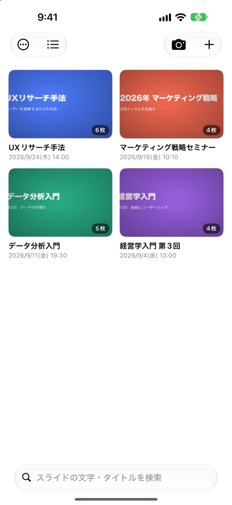
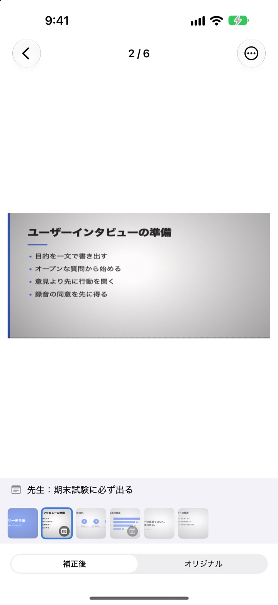
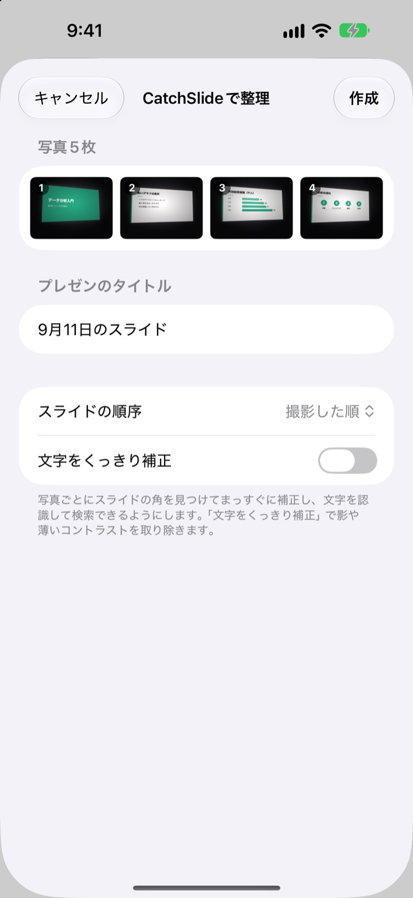
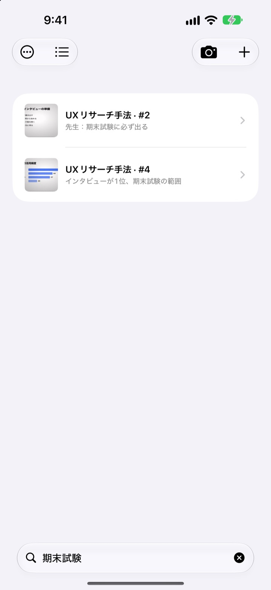

端の席から撮っても、
正面から見たスライドに
カメラがスライドの四隅を見つけてまっすぐに補正し、背景は切り取ります。続けて撮ったスライドは、ひとつのプレゼンにまとまります。
一度の購入ですべての機能が使えます。サブスクリプションもアカウントも不要です。

補正を試してみる
講義室の端の席から斜めに撮った写真です。緑の線は、スライドの四隅を見つけた位置です。
復習しようとカメラロールを開いて、スライドが見つからなかったことはありませんか？
後ろの席から撮ったスライドはいつも斜めで、自撮りやレシートの間に埋もれてしまいます。静かな講義室では、シャッター音が気になって撮るのをためらうことも。CatchSlideなら音を立てずに撮って、まっすぐに補正し、プレゼンごとにまとめておけます。
撮った瞬間に、まっすぐ
カメラがスライドの四隅をリアルタイムで捉え、緑色で知らせます。斜めから撮っても正面から見たように補正し、背景は切り取ります。
シャッター音は鳴りません。自動撮影をオンにすれば、スライドが切り替わるたびに自動で撮影し、ブレた写真は飛ばします。

撮りためた写真も、まとめて
写真アプリで講義の写真を何枚か選び、CatchSlideに共有するだけ。撮った順に補正して、ひとつのプレゼンに整理します。文字をくっきり補正をオンにすると、影やぼやけたコントラストも取り除きます。

覚えている一語で探せる
撮ったスライドの文字をデバイス内で読み取っておきます。何週間たっても、ひとつの単語でそのスライドが見つかります。
スライドごとに残したメモも検索できます。期末試験と書いておけば、試験範囲が一度にそろいます。

始め方は3ステップ
- 1
カメラを開く
一覧のカメラボタン、ホーム画面のウィジェット、ロック画面から開けます。
- 2
スライドを画面に収める
四隅が緑色になったらシャッターを押すか、自動撮影に任せます。
- 3
プレゼンごとに見返す
検索したり、メモを残したり、復習用PDFに書き出したりできます。
ひとつのプレゼンでできること
- 録音
- 撮りながら録音すれば、スライドを開いたときに、そのスライドを撮った瞬間から聞けます
- 文字起こし
- 録音を文字にして、スライドごとにその時の話を表示します。検索にも使えます
- AI要約
- スライドの文字と文字起こしからプレゼンを要約します（Apple Intelligence対応のiOS 26以降のデバイス）
- 1枚、2枚、4枚ずつ並べた復習用PDF
- Markdown
- NotionやObsidianに取り込める.zip
- PowerPoint
- .pptxで書き出し、文字起こしは発表者ノートに入ります
- プレゼンを結合
- 複数のプレゼンを選んで、ひとつにつなげます
- iCloud同期
- オンにすると、同じApple IDのほかのデバイスでもプレゼンを見られます。最初はオフです
- ウィジェット
- ホーム画面やロック画面からすぐにカメラを開けます
文字認識、文字起こし、AI要約はすべてデバイス内で処理します。
一度買えば、すべての機能
CatchSlide
- 無音撮影、自動撮影、まっすぐ補正
- 写真アプリからまとめて読み込み
- プレゼンごとの整理、文字とメモの検索
- 録音、文字起こし、AI要約
- PDF、Markdown、PowerPointへの書き出し
- iCloud同期とウィジェット
チップ（任意）
- アプリが役に立ったら、開発者に小さなチップを送れます
- チップで使える機能が増えることはありません。送らなくても、すべての機能をそのまま使えます
「自分の情報」画面から送れます。
サブスクリプションも、機能を解放する追加購入もありません。価格はApp Storeでご確認ください。
よくある質問
スライドはどうやって撮りますか？
カメラを開いてスライドを画面に合わせると、四隅が緑色で捉えられます。そこでシャッターを押してください。自動撮影をオンにしておくと、スライドが切り替わるたびに次のスライドを自動で撮ります。
シャッター音は鳴りますか？
鳴りません。カメラ画面をそのまま保存する仕組みなので、どの国で使っても無音で撮影できます。
何枚かの写真が、なぜひとつのプレゼンにまとまるのですか？
最後に撮ってから5分以内に続けて撮ると、同じプレゼンとしてまとめます。一覧でタイトルをタップすると名前を変えられ、分かれてしまったプレゼンはプレゼンを結合でひとつにできます。
撮っておいた写真を追加できますか？
はい。写真アプリで何枚か選んで共有ボタンからCatchSlideを選ぶか、一覧の＋ボタンから写真から読み込むを選んでください。撮った順に補正して、ひとつのプレゼンにまとめます。
四隅がうまく捉えられませんでした。
スライドを開いて⋯メニューの角を調整を選び、四隅をドラッグして合わせ直してください。自動検出でもう一度探したり、画像全体で写真全体を使ったりもできます。元の写真は常に残しているので、いつでも補正し直せます。
スライドの文字を検索できますか？
一覧の上にある検索欄に単語を入れると、スライドの文字、プレゼンのタイトル、メモ、文字起こしから探して、そのスライドへすぐに移動します。文字認識はデバイス内で行います。
PDFにはどうやって書き出しますか？
プレゼン内の共有メニューからPDFで書き出すを選び、1枚、2枚、4枚のレイアウトから選んでください。共有シートからファイルに保存したり、ほかのアプリに送ったりできます。
スライドの順番を変えたり削除したりするには？
プレゼン内のスライドを長押ししてドラッグすると、順番が変わります。長押しで出るメニューから1枚ずつ削除や共有ができ、選択を使えば複数枚をまとめて削除できます。
録音とAI要約はどう使いますか？
カメラ画面の上にある録音をオンにして撮ると、スライドごとにその時の音声が付きます。プレゼンノートのAIで要約は、スライドの文字と文字起こしからプレゼンを要約します。AI要約は、Apple Intelligenceに対応したiOS 26以降のデバイスでのみ使えます。
スライドや録音はどこに保存されますか？
すべてデバイス内に保存されます。「自分の情報」で同期をオンにしたときだけ、ご自身のiCloudにアップロードされます。アカウント登録は不要です。詳しくはプライバシーポリシーをご覧ください。
お問い合わせ、不具合の報告、機能のご要望は leeo@kakao.com までお送りください。